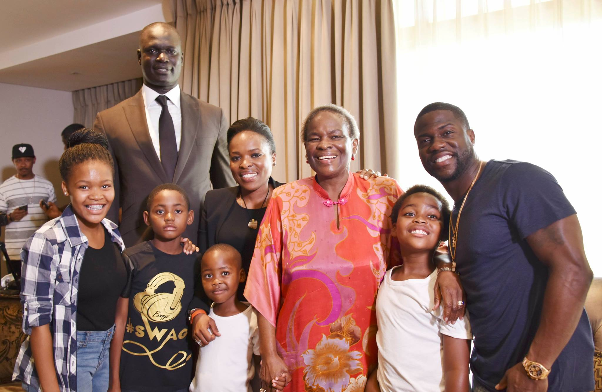

How two simple exercises changed my life
I think it's very exciting, being the first edition to learn about the Crans Montana Forum and to hear what's going to be happening
in terms of the narratives and what's going to be spoken about. So I'm very excited. I usually don't do expectations, but I'm just
hoping that during the talks and everything that there will be a new energy given what is happening in the world and in the globe,
that something out of this will be exciting, where narratives and exchanges will be made for the positive. I think for me what's
really important is just the narrative on a global basis, whereby we need to speak peace and togetherness and unity, to bring down,
because I think people are really looking for hope. So I'm hoping that the Crans' Montana will bring a lot of hope. You know, peace
is a great challenge for everybody, and I think, you know, the most important thing is that everybody should start to work with unity,
how that's going to look and how it happens. But as I said, it's like there's a lot of people that need hope, and I hope this forum will
bring a voice to the hopeless. You know, I believe that there's a lot of girl-child mentorship. I think now my dream is to do boy
mentorship programmes because I think, for women to be recognized in a society where they are downgraded, it's important to bring men
into the conversation so they assist to balance the quota. Thus men work together with the women to restore the narrative to where it’s suppose to be.

How two simple exercises changed my life
Princess Tirelo Molotlegi from the Royal Bafokeng King Nation is here to talk about an amazing project that she has with the NBA and the students in her nation.
The NBA project started a year ago to bring kids in the community to learn to play basketball and help them stay off the streets.
The kids have taken a keen interest in the whole basketball thing and it's going well. There are three coaches from the U.S. who used to play and retired and they're
basically there to train the kids. As rugby and soccer are huge in South Africa, why do the kids take such a liking to basketball?
It's because the NBA is so organized and the program is so good, as well as the mentoring with the coaches, which makes the kids feel open to talk to them and have
role models that they see succeed. Coaches make time to chat with the kids and tell them about the great opportunities beyond just playing basketball. They also emphasize
the importance of teamwork, self-confidence, self-esteem, and believing in oneself. My purpose as an individual is to reach out to people and make a difference, and the message
to the kids is to tell them to never give up and to be persistent and persistent until they reach their goal.
It is an after-school program where kids come to the basketball courts and train for a couple of hours, two, three hours, and then go home. The changes seen in the kids since
the program was launched include the development of talent, confidence, and belief in themselves.
I hope kids will learn to be themselves and to believe in themselves, be kind and caring, and do what's good for them and for everyone around them. I also hope that the kids
will learn to be confident and to believe in themselves. Discovering one's authenticity and power is paramount. Thus I search for people who have the heart to give and have the
passion to help in new upcoming projects.

How two simple exercises changed my life
The Queen Mother of the Royal Bafokeng nation, Dr Semane Molotlegi, hosted a charity polo match with her Daughter Tirelo Molotlegi.
The event was in association with Motsweding FM, La Martina and Aveng Grinaker-LTA and featured top international, South African
and African polo players. Matches of three players a side are played on smaller grass fields that are fully boarded all around.
The curtain raiser is a three-a-side match featuring two international women who have represented both South Africa and Zimbabwe,
playing alongside top male international players. Princess Tirelo Molotlegi of the Royal Bafokeng said this was the first time
action polo would be played in the North West and proceeds from the cup will go to The Girl Guides Association of SA and Thuto Thebe Educational Fund.